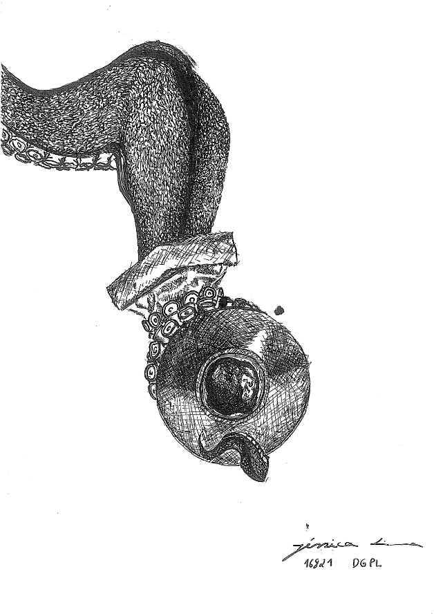

El pulpo es un animal inteligente, misterioso y eficaz. De hecho, una de sus particularidades es dejar caer tinta negra hasta el punto de burlar a sus depredadores. Para ilustrar su personalidad decidí usar su tinta y su lado misterioso, ilustrando solo uno de sus brazos.
